A Romantic Overture
Copyright © 2008 D. Michael McIntyre
This tutorial was written using a pre-release version of Rosegarden 1.7.0, and it specifically showcases some features new to this version.
In this tutorial, we will start with a public domain MIDI file taken from the Mutopia Project. Beethoven's Fidelio Overture is the "worst case scenario" I used when I put together the new LilyPond extension that allows the export of staff brackets based on track parameters. I thought it would be useful to show everyone what I did to put together the example file, and then take all of that a little further, and show how it is possible to use Rosegarden to print both a conductor score and individual player parts.
The Import
To get started, right click on this link and choose "Open with Rosegarden" from the context menu. Rosegarden can import the file right from the web! If that doesn't work for some reason, you may have to save it to disk, start Rosegarden, then load it manually. (Either File -> Load or File -> Import -> Import MIDI File will work equally well.)
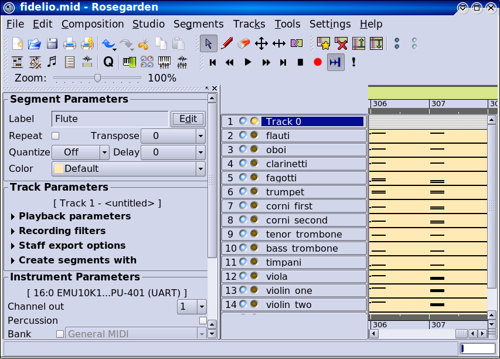
The first track appears to be some kind of control track, just like in
the piano tutorial, and is
useless for our purposes. Rather than delete it, we will first use the
 tool to delete the segment, and then
double click on the label to rename the track for informational
purposes:
tool to delete the segment, and then
double click on the label to rename the track for informational
purposes:
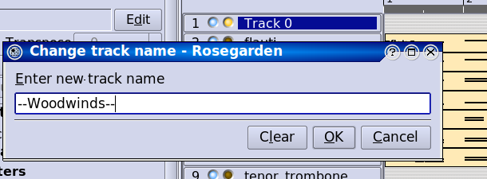
Track Labels
Next, we'll go down and use the  icon
to add tracks, and then create new labels to mark off the various
sections. The track gets added below the current one, so begin on the
"fagotti" track, and so on:
icon
to add tracks, and then create new labels to mark off the various
sections. The track gets added below the current one, so begin on the
"fagotti" track, and so on:
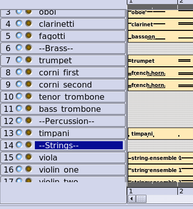
Finally, we'll refer to the original
LilyPond score to make the track labels match the score. It seems
we need to use the  icon to move
the track called "trumpet" down below the horns, and to move
the viola below the violins:
icon to move
the track called "trumpet" down below the horns, and to move
the viola below the violins:
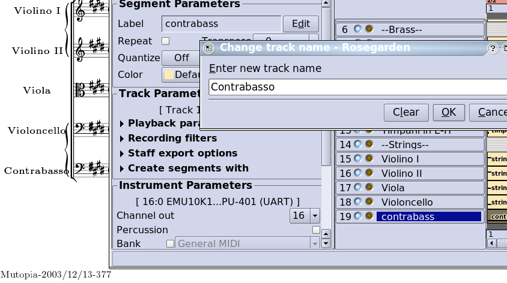
NOTE: The original score has abbreviated labels on subsequent pages, and that is one thing that is definitely impossible to replicate with Rosegarden.
Brackets
Now that we have the labels, we need to match the brackets. The new bracket export feature is very simple to use, but should be used with care. There is no sanity checking to close open brackets, or to ensure that nested combinations make sense, and so it is quite easy to create an impossible situation by mistake. If the exported LilyPond doesn't render without errors, that is the first thing to check.
If they are not already visible, you will want to click on the to enable the new controls.
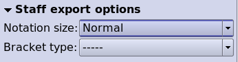
There are several types of bracket start and end markers available, covering several combinations. Markers that have { or [ in them are used to begin a bracket, and markers that have ] or } in them are used to end one, while the ----- marker is just a space filler.
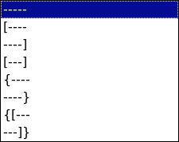
So, to begin, we want a square bracket around the woodwinds, so we select the "Flauti" track, and begin the bracket:
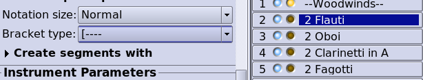
Then we move to "Fagotti" and close it:
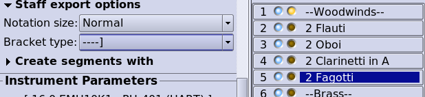
Next, we want another square bracket around the entire brass section, and a curly piano-style bracket around the two horns and the two trombones. Since the top staff in the brass section is a horn staff, we need to begin both types of brackets here:
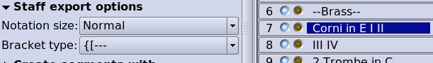
Then we need to close the curly bracket on the second horn track:
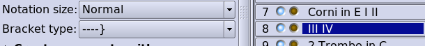
Then open a new curly bracket on the first trombone track:
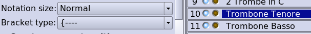
And finally close both curly and square brackets to end the section
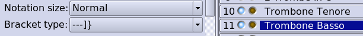
The timpani staff should have its own square bracket that both begins and ends here. Rosegarden has a bracket type for this that exports reasonable looking LilyPond code, but this code does not work correctly in LilyPond 2.10, which might be a LilyPond bug. We have the type in the hope that it might eventually start to work:

Finally, the string section is put together just like the brass section, with a curly bracket around the two violins, and around the cello and contrabass:
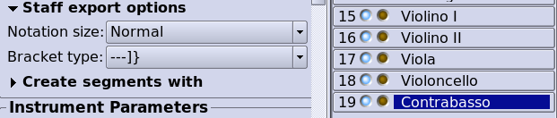
Notation Tweaks
Now that the brackets are set, we need to tweak the notation slightly. When I created the sample file that inspired this tutorial, I built everything from scratch using this Mutopia file for inspiration. Now that we are starting with imported MIDI, there are some interesting problems. MIDI apparently carries key signature information, but not transpose information. As a result, the clarinet part has a transposed key signature, but the actual notation is based on concert pitch notes, because MIDI is a performance format. There are a lot of spurious accidentals here, and none of this would sound correctly on a real clarinet in A as written.
The new fast and easy way to handle situations like this is to take advantage of Arnout Engelen's clever new extension to the track preset segment parameters. These normally only affect segments that haven't been created yet, and I wanted some way to sync existing segments to these parameters, for situations exactly like this. Arnout decided the place to hang that feature was right inside the Load Preset dialog. It makes use of the undersold transpose by interval feature he introduced some time back, and this combination is perfect for correcting little mishaps like this one.
So, to begin, go up to the "Flauti" track, make sure the controls are enabled, and click the button. Set up the controls like the following, being sure to choose "Convert existing segments" as depicted. (There isn't anything to convert on this staff, but it's good practice to leave the dialog in this state, which it will remember for later.)
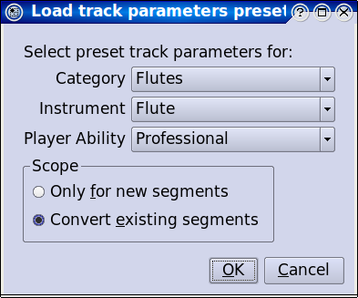
Now, in order to help remember where we've been, let's change the color for this segment:
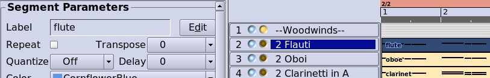
Next, we do the Oboe track:
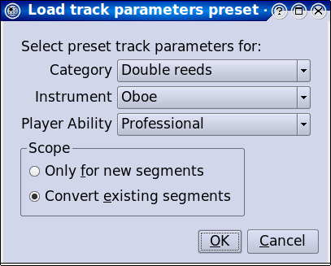
And so on... All of these instruments are in the track parameter preset database kindly provided to us by E. Magnus Johansson, from the A clarinet to the French horn in E, and so forth. (If your Italian is a little shaky but your English is OK, look at the segment labels for clues. A "fagotti" is a bassoon, and a "trombe" is a trumpet, for example.)
Loading each preset will transpose the notation and the playback appropriately, alter any key signatures as necessary, and change out the clefs. In some cases, it might replace a clef you wanted with the clef in the database (for instruments that sometimes read bass and sometimes read tenor, for instance) but this is definitely useful more often than it goes wrong, and such errors are easy to adjust (as we shall see shortly.)
When you get to the "Trombone tenore" part, it is a good idea to go ahead and address another potential problem. The trombones do not enter until measure 230, but the beginning of the score should be padded out with rests to account for all this time. Scroll to bar 230, and use the cursor to drag the beginning of the segments back to the start of the composition. Then load the parameters, and change the colors as before...
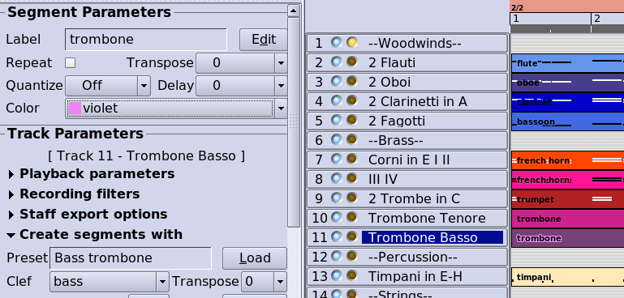
...finally finishing with the "Contrabasso" track:
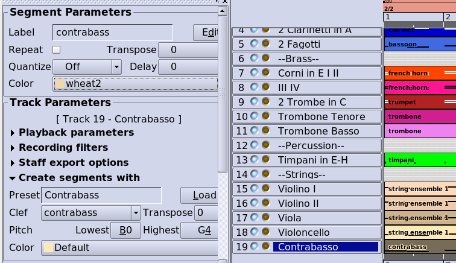
Now Ctrl+A and N to open a combined notation view:
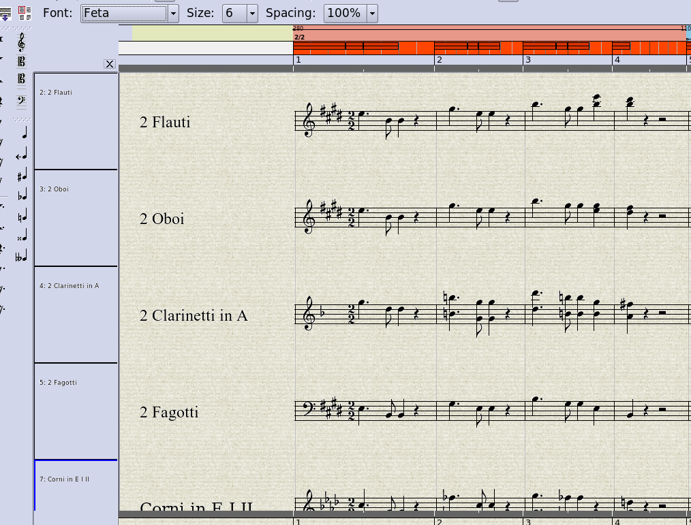
Unfortunately, we see that the key signatures and accidentals are still out of whack. This was probably caused by the unusual situation we started with, where the actual notation did not match its key signature. The alternative transpose method is not as reliable with respect to octaves, but we will have to try our luck with that at this stage. Select and delete the key signature in the first track (so that we have the option of applying a new change to all tracks, and getting it adjusted relative to segment transpose (my own feature,) which we have already corrected,) then go to Segment->Add Key Change and set up the following options (being sure to leave existing pitch alone, since it is fine in this case):
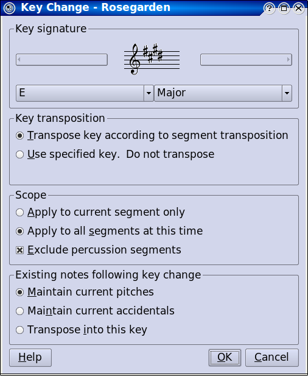
Having a look at the result made me realize that we moved the left edges of the trombone segments, but did not move the clefs and key signatures, which are still parked at bar 230. So go select them...
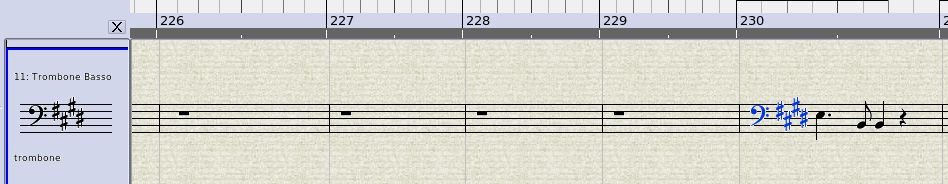
...then move them to the first bar. You'll have to do each track one by one, as it is not possible to perform cut and paste operations on more than one segment at a time (unless you perform them on all segments, using the range cut/copy/paste features, which would not be appropriate here.) After this step, the result seems to match the original score closely:
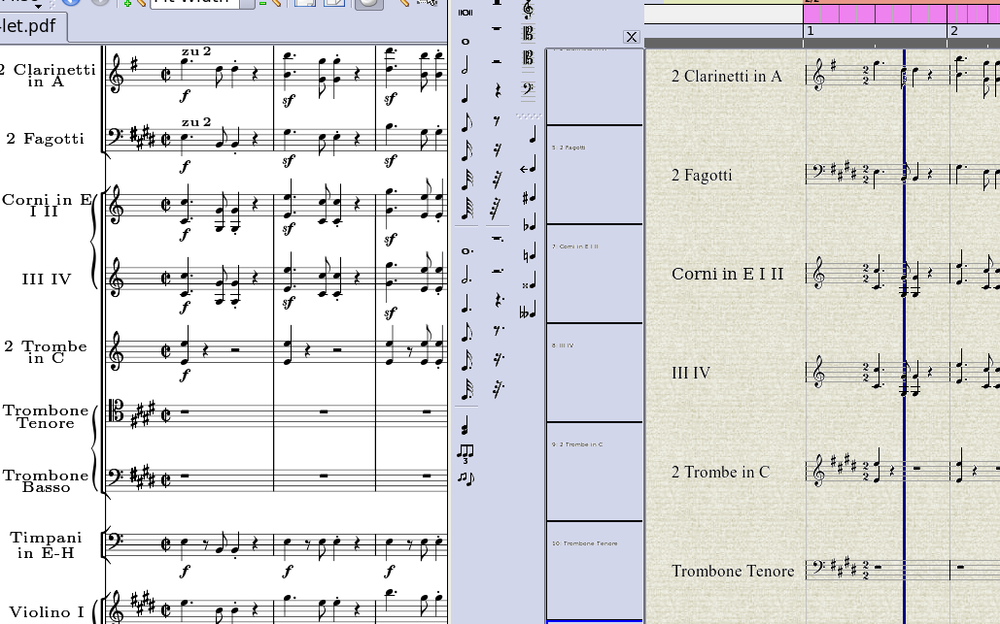
One problem is that the tenor trombone part calls for a tenor clef, but the database specifies a bass clef. To match the score, double click on the bass clef in the tenor trombone part, and select a tenor clef instead, being sure to leave the existing pitches intact:
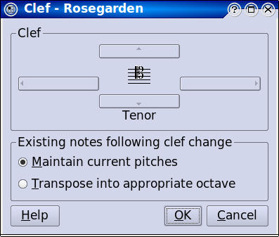
Next, the trumpet part in the original apparently has no key signature at all, so select it and hit Delete to remove it.
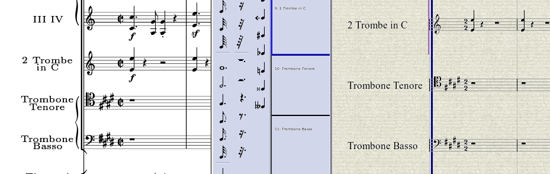
Finally, the original score displays cut common time, instead of 2/2. To correct this, double click the tempo and time signature ruler to open the Tempo and Time Signature Editor dialog, then double click on the existing time signature, and be sure to check the cut common time option:
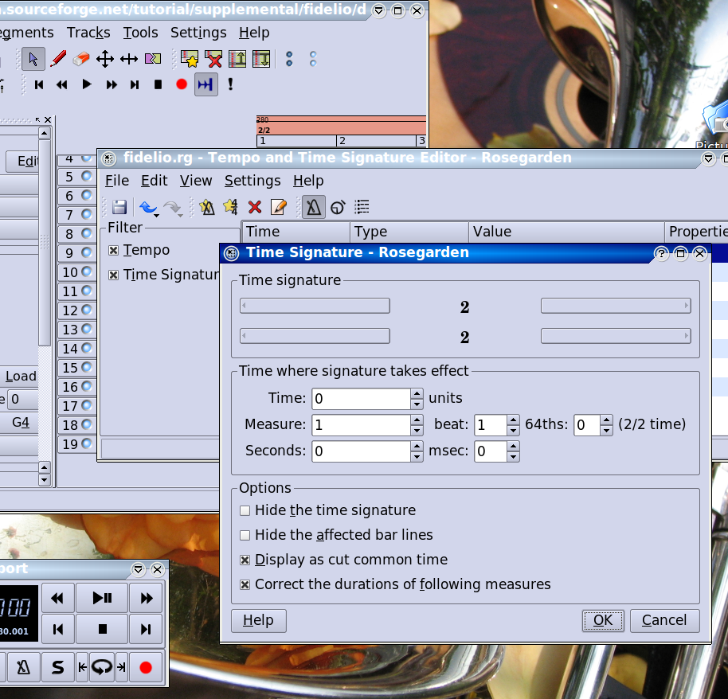
After a long bit of processing, the new time signature appears in the notation view:
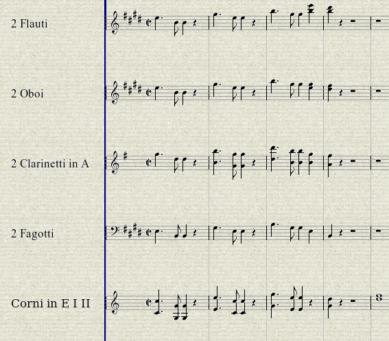
At this stage, the results are substantially similar to the original. There are numerous dynamics, tempo and performance indications missing, phrasing slurs, and the entire score should be surveyed for voice overlap problems such as those described in the piano tutorial, but we are far enough along for the purpose of this demonstration, as can be confirmed by having a look at File->Preview with LilyPond. This is a good time to edit the header information, to supply the title and so forth...
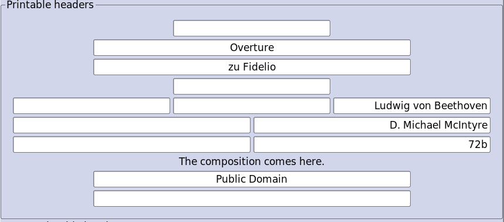
...and the results are looking good:
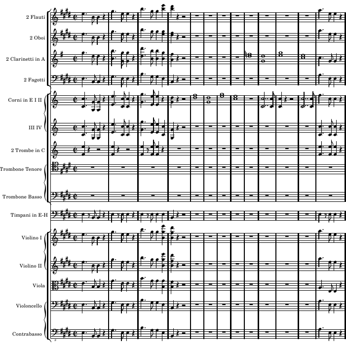
Player Parts
Unfortunately, Rosegarden doesn't have any kind of handy feature to decompose a conductor score into player parts, and nothing like that is on the horizon for the foreseeable future. This does require some extra work on your part, but it's not impossible. At this stage of development, I'm afraid we at Rosegarden often have to settle for "it's not totally impossible" as good enough.
Looking ahead at the original score from Mutopia, all the individual instruments have separate parts, except that the first and second horns and third and fourth horns share a single staff (as they do in our file as it stands right now.) This means all we need to do is export the staffs one by one to create individual player parts. Except now that we have created brackets, we will export broken LilyPond code if we try this. Unfortunately, this means we need to maintain a separate copy of all the parts for individual player purposes.
UPDATE: I won't revisit this tutorial to explore the new possibilities, but I put the old "Export staff group bracket" option back, renamed, recycled, and bent to a slightly new purpose. If you turn this off, you can actually just export the parts directly from the master score, one by one. You will still need an alternate set of parts for much of what is to follow in this tutorial, but you can now ignore the step of manually reverting all the staff settings to defaults. I will discuss this new option in more detail elsewhere.
I tried, but was unable to come up with anything more clever than just using File -> Save As... to save a copy of the file under a different name, with one file for the conductor score, and one file for the player parts. That was less tedious than copying everything and setting the track labels back up, as there is no way to copy and paste whole tracks, and the File -> Merge File option doesn't copy this information either, for what proved to be arcane and tricky reasons.
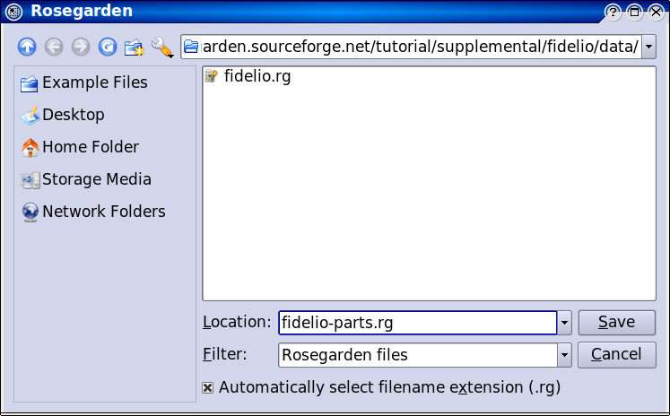
Now simply revert all the staff settings to ----- and go track by track to export and print player parts. The only really tricky thing to deal with from here is all the tempo indications, and anything else that should be present in every player's part. I didn't enter these into the conductor score, but this is how they appear in the original score, with our versions entered into the flute part via the text tool:
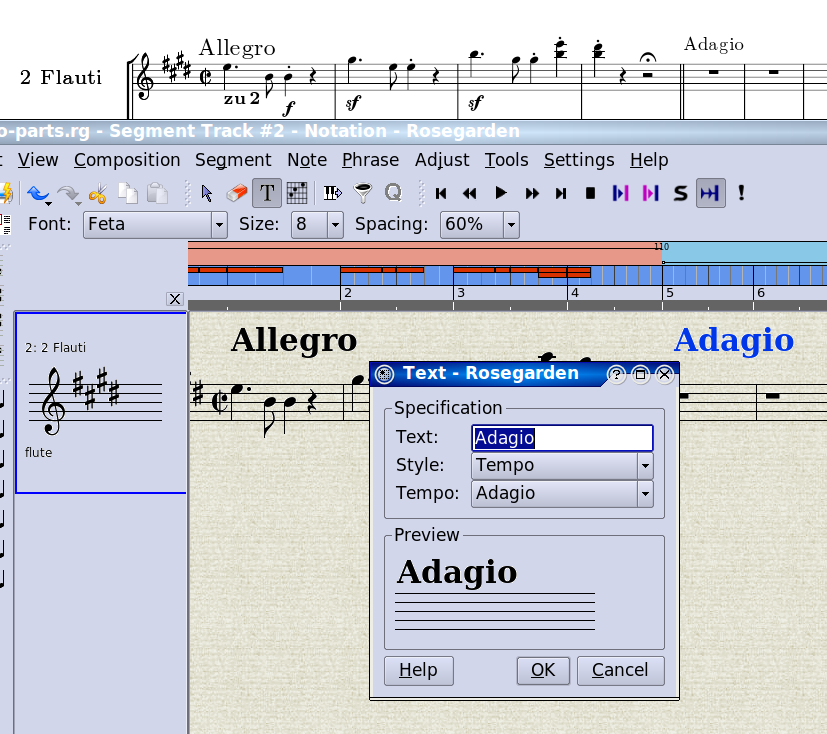
The double barline occurs in every part, so this is another good thing to add here. Double barlines are another LilyPond extension, and these run off the same text tool used to enter the tempo indications. They should be inserted anywhere in the bar before you want the special barline to occur, which is bar 4 in this case (it helps with placement of these LilyPond Directives if you click the text tool on a note head in the bar somewhere):
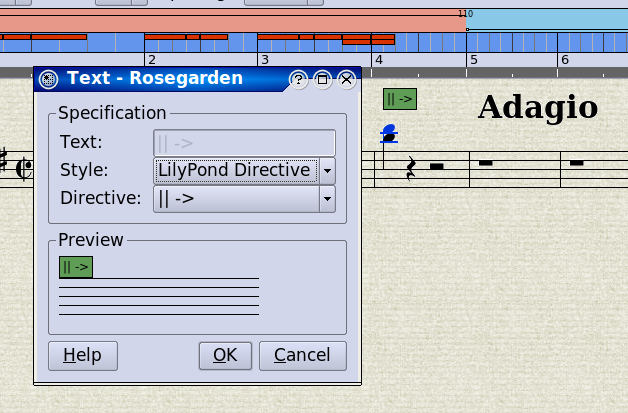
Now that we have a template for text that should be in every part, we can select these three events (I'm just dealing with these three on the first page for the purpose of this demonstration) (note to self: it would be convenient to be able to use the selection event filter to wind up with only the text events selected, and that would be a good example of why a tool copied directly from Cakewalk has never really fit very well in Rosegarden, and what a true Rosegarden selection event filter ought always have done) and Ctrl+X to cut them right back out:
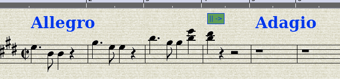
Then create a new track, and Ctrl+V to paste them into it:
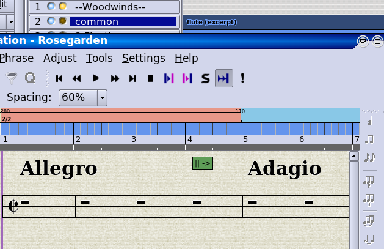
Now we can go through a rather (but not unbearably) tedious process of Ctrl dragging a copy of the segment onto each of the other segments one by one.
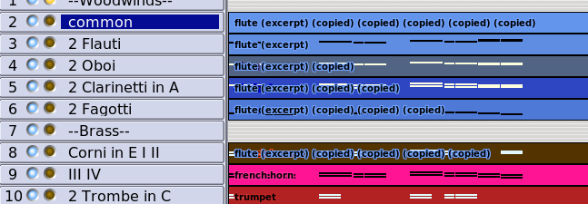
Now click on a track, we'll start with Trombone Tenore, to select all of its segments. Ctrl+J to merge the two segments, and now we're ready to do a File -> Preview with LilyPond from inside a notation view of this staff to see the result. Be sure to export selected segments this time.
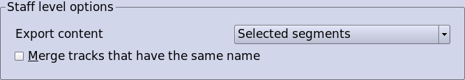
It seems the double barline has caused a small export glitch, which has resulted in the initial four-bar rest being broken into three and a whole rest, where the double barline LilyPond Directive was. This is not going to be fixed, and you will have to hand edit the result to correct this small glitch if you desire. On the bright side, the result of our effort here actually looks better than the Mutopia original, which has pages and pages of whole rests!
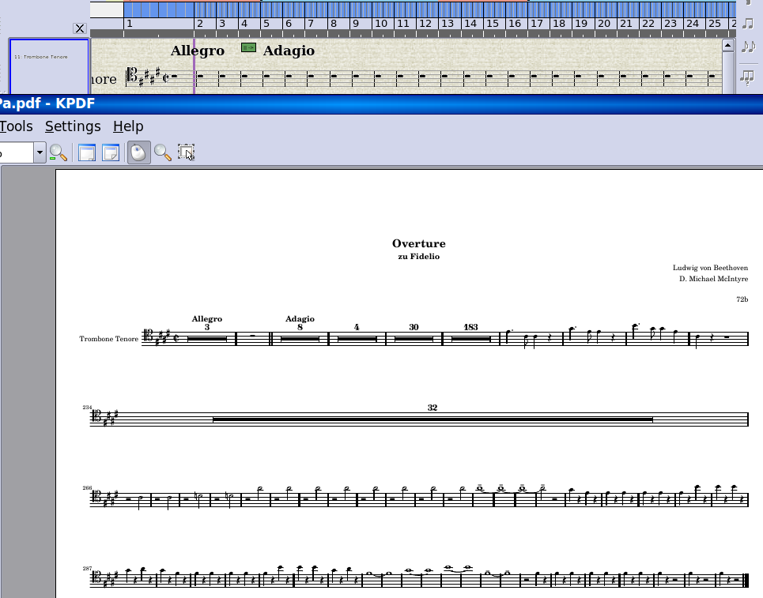
Rosegarden automatically exports rests in such a way that they try to collapse as much as possible. If you export this trombone part beside one of the horn parts (as a totally random and meaningless example) the rests only collapse where both parts are silent:

Conclusion
That's it in a nutshell, I think. If I've missed something worth addressing, please do send me a line. I'm sure you know where to find me. :)